Всесоюзный
центральный научно-исследовательский
и проектный институт типового и экспериментального
проектирования тепличных комбинатов
и агропромышленных комплексов
(Гипронисельпром) Госагропрома СССР
Пособие
по
проектированию теплиц и парников
(к СНиП 2.10.04-85)
Утверждено
приказом Гипронисельпрома
от 27 мая 1986г. № 96
Москва Стройиздат 1988
Пособие по проектированию теплиц и парников: (к СНиП 2.10.04-85) /Гипронисельпром. - М.: Стройиздат, 1988.
Содержит положения по проектированию фундаментов, конструкций пленочных теплиц, теплозащитных экранов, системы отопления, защиты теплиц от снегопереносов. Приводятся примеры расчетов конструкций, системы отопления и снегозащиты.
Для инженерно-технических работников проектных организаций.
Разработано Гипронисельпромом Госагропрома СССР (кандидаты техн. наук П.Л. Нестругин - руководитель работ, В.И. Костенецкий, В.З. Павлов, инженеры В.М. Нестеренко, В.И. Бычков, Л.И. Глазов, П.П. Сороченко).
СОДЕРЖАНИЕ
песок средней крупности рыхлый с коэффициентом пористости е>0,8;
песок пылеватый средней плотности с коэффициентом пористости 0,6£е£0,8;
песок пылеватый рыхлый с коэффициентом пористости е>0,8;
супеси пластичные с показателем текучести 0£IL£1;
суглинки и глины полутвердые с показателем текучести 0£IL£0,25;
суглинки и глины тугопластичные с показателем текучести 0,25£IL£0,5;
суглинки и глины мягкопластичные с показателем текучести 0,5£IL£0,75;
суглинки и глины текучепластичные с показателем текучести 0,75£IL£1;
просадочные грунты с показателем относительной просадочности 0,01£eSi£0,05.
1.2. При проектировании микросвай в сложных грунтовых условиях (суглинках и глинах с показателем текучести 0,6£IL£1, просадочных грунтах первого типа с показателем относительной просадочности eSi£0,05) следует руководствоваться результатами натурных испытаний, выполненных в соответствии с указаниями прил. 1.
1.3. При строительстве теплиц на пучинистых грунтах должен быть обеспечен их ввод в эксплуатацию до наступления устойчивых отрицательных температур.
1.4. При проектировании микросвайных фундаментов теплиц следует руководствоваться требованиями СНиП 2.02.01-83, СНиП 2.02.03-85, СНиП 2.03.01-84.
1.5. Фундаменты из микросвай для теплиц следует проектировать на основе результатов инженерно-геологических изысканий, исследования грунтов и действующих нагрузок.
1.6. Расчет фундаментов из одиночных микросвай, воспринимающих постоянно действующую вертикальную нагрузку с эксцентриситетами, не превышающими 1/6 меньшего размера поперечного сечения сваи, и горизонтальную нагрузку, не превышающую 1/10 часть от вертикальной, производится без учета изгибающих моментов и горизонтальных сил. При эксцентриситетах и горизонтальных силах превышающих указанные соотношения, расчет микросвай производится на совместное воздействие вертикальных и горизонтальных сил и изгибающего момента в соответствии с указаниями пп. 1.29-1.34.
1.7. При проектировании свайных фундаментов теплиц состав и объем изысканий определяются по СНиП 2.02.03-85, СНиП 1.02.07-87, Рекомендациям по инженерным изысканиям для проектирования и устройства свайных фундаментов (М.: Стройиздат, 1983) и дополнительным требованиям, изложенным в настоящем разделе.
1.8. Для разработки проекта фундаментов теплиц из микросвай необходимы следующие данные:
отчет по инженерно-геологическим и гидрогеологическим изысканиям с планом расположения геологических выработок, колонками изученных разрезов и профилями; планы теплиц, их планировочные отметки, пункты и размеры местных заглублений;
характер приложения и величины нагрузок, передаваемых на фундаменты;
лабораторные и полевые данные физико-механических характеристик грунтов.
1.9. В комплекс инженерно-геологических изысканий должно входить бурение скважин (шурфов), отбор монолитов, лабораторные исследования грунтов и грунтовых вод, статическое зондирование и обработка результатов всех выполненных изыскательских работ.
1.10. При инженерно-геологических изысканиях на площадке строительства отбор монолитов и проб песка следует производить равномерно через каждые 0,5 м по глубине скважины.
1.11. При вертикальных нагрузках до 60 кН в качестве фундаментов теплиц следует предусматривать одиночные микросваи длиной 1 - 3 м прямоугольного сечения с размером сторон 100 - 150 мм, а также круглые (трубчатые) с закрытым или открытым нижним концом диаметром до 180 мм. Пример конструктивного решения железобетонной микросваи показан на рис. 1.
1.12. Размеры микросвай должны определяться расчетом в зависимости от величины действующих нагрузок, грунтовых условий и назначаться с учетом технологической оснастки заводов-изготовителей, обеспечивающих поставку микросвай.
1.13. Допустимые отклонения от проектных размеров свай следует принимать: длина - не более ± 10 мм, ширина (высота) или диаметр сечения - не более ± 5 мм; смещение оси закладной трубки опорной части относительно осей поперечного сечения - не более ± 3 мм.
1.14. Бетон микросвай должен соответствовать следующим показателям качества (СНиП 2.03.01-84):
класс по прочности на сжатие В20 для свай, погружаемых вдавливанием, и В30 - для забивных свай;
марка по морозостойкости не ниже F50;
марка по водопроницаемости W6.
Рис. 1. Пример конструктивного решения свайного фундамента
1 - свая; 2 - бетон, класса В20; 3 - труба 65´3,2 мм; 4 - анкер диаметром 12 мм; 5 - упорная арматура диаметром 8 мм; 6 - арматура сваи
Рис. 2. Конструктивные решения фундаментов с шайбами
а - монолитная шайба; б - сборная шайба; 1 - грунтовый массив; 2 - свая; 3 - анкерный болт; 4 - почвенный слой в теплице; 5 - дренажный слой; 6 - монолитная шайба; 7 - сборная шайба; 8 - бетонная заделка стыка между сваей и шайбой
1.16. В качестве крупного заполнителя для бетона микросваи следует применять фракционированный щебень из естественного камня и гравия по ГОСТ 10268-80 с размерами фракций не более 20 мм.
1.17. Закладные детали фундаментов теплиц должны быть оцинкованы методом металлизации.
1.18. Общая длина свай определяется суммированием глубины погружения, определяемой из условия несущей способности по грунту, толщины дренажного и растительного слоя и свободной длины сваи над растительным слоем.
1.19. Микросваи следует изготавливать без острия, с тупым нижним концом.
1.20. При недостаточной несущей способности одиночных микросвай по грунту от воздействия горизонтальных нагрузок рекомендуется в уровне планировочной отметки несущего слоя грунта устраивать шайбы. Шайбы следует предусматривать квадратными или круглыми в плане из бетона класса В 15 с размерами в плане и по высоте не менее 2в сваи (d - диаметр или меньшая сторона прямоугольной сваи).
Пример конструктивного решения сваи с шайбой приведен на рис. 2.
1.21. Несущая способность микросвай определяется меньшим значением несущей способности по материалу или грунту.
1.22. Железобетонные микросваи теплиц, погружаемые вдавливанием, следует рассчитывать по материалу с учетом случайного эксцентриситета приложения вдавливающего усилия только при грунтовых условиях, характеризующихся поверхностным залеганием песчаных грунтов, пластичных супесей с консистенцией (показатель текучести) 0£IL£0,3, полутвердых глинистых грунтов с консистенцией 0£IL£0,2 и просадочных грунтов с показателем относительной просадочности eSi£0,05, имеющих природную влажность менее 0,12.
При других природных условиях, указанных в п. 1.1, проверка прочности по материалу на действие вертикальной нагрузки не производится.
1.23. При расчете сваи по материалу от воздействия вертикальной нагрузки должно соблюдаться условие
PB£N, (1)
где РВ - максимальное усилие вдавливания, кН, определяемое в соответствии с указанием п. 1.24 или прил. 1; N - несущая способность микросваи по материалу, кН, определяемая в соответствии с указаниями СНиП 2.03.01-84 с учетом случайного эксцентриситета приложения усилия, равного 1/2 диаметра сваи или меньшей стороны сечения, и шарнирного опирания сваи по ее концам.
1.24. Максимальное усилие вдавливания сваи РВ, кН, определяется по формуле
РВ=kПRF, (2)
где kП - безразмерный переходный коэффициент, принимаемый в зависимости от грунтовых условий по табл. 1; R - расчетное сопротивление грунта под нижним концом микросваи на глубине до 1 м, кПа, принимаемое по табл. 2 для песчаных и глинистых грунтов и по табл. 3 для просадочных грунтов в состоянии их полного водонасыщения или определяемое в соответствии с указаниями прил. 1; F - площадь поперечного сечения микросваи, м2.
Таблица 1
|
Характеристика грунта |
Коэффициент kП |
|
|
1 |
Супеси пластичные с 0£IL£0,3, глинистые грунты полутвердые с 0£IL£0,2 |
1,8 |
|
2 |
Пески всех видов, указанных в п. 1.1 |
2 |
|
3 |
Просадочные грунты с 0,01£IL£0,05 и природной влажностью менее 0,12 |
2,5 |
Таблица 2
|
Расчетное сопротивление R в песчаных грунтах средней плотности |
|||||
|
гравелистых |
крупных |
средней крупности |
мелких |
пылеватых |
|
|
глинистых грунтах с консистенцией IL |
|||||
|
0,1 |
0,2 |
0,3 |
0,4 |
0,5 |
|
|
1 |
- |
- |
2250 |
1420 |
950 |
|
1900 |
1420 |
1000 |
720 |
400 |
|
|
1,5 |
- |
- |
2370 |
1500 |
1000 |
|
2600 |
1950 |
1350 |
950 |
550 |
|
|
2 |
- |
- |
2760 |
1750 |
1150 |
|
3100 |
2350 |
1630 |
1150 |
650 |
|
|
2,5 |
- |
- |
- |
- |
- |
|
3450 |
2600 |
1850 |
1290 |
750 |
|
Примечание. Над чертой даны нормативные сопротивления для песчаных грунтов, под чертой - для глинистых.
Таблица 3
|
Расчетное сопротивление R при средней пористости грунта под нижним концом сваи, n, % |
||||||
|
£43 |
44 |
45 |
46 |
47 |
49 |
|
|
1 |
1000 |
800 |
650 |
500 |
350 |
200 |
|
1,5 |
1300 |
1000 |
800 |
650 |
500 |
300 |
|
2 |
1400 |
1150 |
1000 |
800 |
600 |
340 |
|
2,5 |
1500 |
1250 |
1100 |
900 |
650 |
380 |
|
3 |
1600 |
1400 |
1200 |
1000 |
700 |
400 |
1.25. При расчете микросваи по грунту от воздействия вертикальной нагрузки ее несущая способность Ф определяется по формуле
Ф=m(mRRF+uSmffili), (3)
где m - коэффициент условий работы сваи в грунте, равный 1; mR - коэффициент условий работы грунта под нижним концом сваи, принимаемый равным 1 при погружении сваи непосредственно в грунт или в лидирующую скважину глубиной до 0,7 от глубины погружения сваи и 0,85 - при большей глубине лидирующей скважины; R и F - то же, что в формуле (2); u - наружный периметр поперечного сечения сваи, м; fi - расчетное сопротивление 1-го слоя грунта основания на боковой поверхности сваи, кПа, принимаемое по табл. 4 для песчаных и глинистых грунтов и по табл. 5 для просадочных грунтов в состоянии их полного водонасыщения или определяемое в соответствии с указаниями прил. 1; li - толщина 1-го слоя грунта, соприкасающегося с боковой поверхностью сваи, м; mf - коэффициент условий работы грунта на боковой поверхности сваи, принимаемый равным 1 при погружении сваи непосредственно в грунт или в лидирующую скважину, площадь поперечного сечения которой составляет менее 0,7 от площади поперечного сечения сваи, и 0,8 при соотношении площади поперечных сечений скважины и сваи в пределах 0,7-0,9.
Таблица 4
|
Расчетное сопротивление Г в песчаных грунтах средней плотности |
|||||
|
средней крупности |
- |
мелких |
пылеватых |
- |
|
|
глинистых грунтах с консистенцией IL |
|||||
|
0,2 |
0,3 |
0,4 |
0,5 |
0,6 |
|
|
0,75 |
30 |
25 |
20 |
13 |
7 |
|
1 |
32 |
26 |
21 |
14 |
8 |
|
1,5 |
34 |
27 |
22 |
15 |
9 |
Таблица 5
|
Расчетное сопротивление fi при средней пористости слоя, n, % |
||||||
|
£43 |
44 |
45 |
46 |
47 |
49 |
|
|
0,5 |
7,5 |
7 |
6,5 |
6 |
5,5 |
5 |
|
0,75 |
8 |
7,5 |
7 |
6,5 |
6 |
5,5 |
|
1 |
8,5 |
8 |
7,5 |
7 |
6,5 |
6 |
|
1,5 |
9 |
8,5 |
8 |
7,5 |
7 |
6,5 |
|
2 |
9,5 |
9 |
8,5 |
8 |
7,5 |
7 |
|
2,5 |
10 |
9,5 |
9 |
8,5 |
8 |
7,5 |
1.26. При расчете микросваи с шайбой по грунту от воздействия вертикальной нагрузки ее несущая способность ФШ определяется по формуле
ФШ=Ф+mmШRШFШ, (4)
где Ф - несущая способность сваи без шайбы, кН, определяемая по формуле (3); m - то же, что в формуле (3); RШ - расчетное сопротивление грунта под шайбой, кПа, принимаемое по СНиП 2.03.01-84 как для обычных фундаментов или определяемое экспериментально; mШ - коэффициент условий работы шайбы, принимаемый равным 1,2 при определении RШ по СНиП 2.03.01-84 и 1 - при определении RШ экспериментально; FШ - площадь поперечного сечения шайбы, м.
1.27. Прочность соединения сваи с шайбой проверяется уравнением
t=NC/(uhШ)£150, (5)
где t - касательное напряжение, возникающее по боковой поверхности сваи в месте ее заделки в шайбу, кПа; u - то же, что в формуле (3); hШ - высота шайбы, м; NC - сила, возникающая в месте соединения сваи с шайбой, кН, определяемая по формуле (6).
1.28. Сила NC в месте соединения сваи с шайбой определяется по формуле
NC=RШFШ-RF-uSfili, (6)
где RШ и FШ - то же, что в формуле (4); R и F - то же, что в формуле (2); u, fi, li, - то же, что в формуле (3).
1.29. Устойчивость микросвай по грунту (горизонтальные перемещения) и материалу (изгибающий момент и поперечная сила) проверяется в соответствии с расчетной схемой рис. 3 и указаниями, приведенными в пп. 1.30 - 1.34.
УОН=(h+hOH)QH£1 см, (7)
где h - расстояние от планировочной поверхности грунта до верха микросваи (уровня опирания стойки каркаса), м; hОН - расстояние от поверхности грунта до точки поворота сваи в грунте, м, определяемое в соответствии с указаниями пункта 1.31; QH - угол поворота микросваи от действия нормативных усилий, рад, определяемый по формуле (9).
1.31. Расстояние от поверхности грунта до точки поворота сваи в грунте hОН, м, определяется по формуле
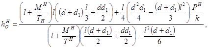
где ТН, РН, МН - соответственно нормативные горизонтальная вертикальная силы, кН, изгибающий момент, кНм, действующие на микросваю в уровне планировочной поверхности грунта; l - длина части сваи, заделанной в грунт, м; d - размер грани поперечного сечения микросваи, надвигающейся на грунт при повороте, м; d1 - размер грани поперечного сечения микросваи, параллельной горизонтальной силе, м; k - коэффициент пропорциональности кН/м4 , принимаемый по табл.6.
Рис. 3. Расчетные схемы микросвайных фундаментов теплиц
а - на воздействие вертикальной нагрузки; б - на воздействие комплекса нагрузок
Таблица 6
|
Характеристика грунта |
Коэффициент пропорциональности k, кН/м4 |
|
|
1 |
Глины и суглинки с IL£0,1, пески крупные средней плотности |
18×103-25×103 |
|
2 |
Супеси с IL<0, глины и суглинки с IL=0,1l-9,3, пески средней крупности и средней плотности, пески пылеватые плотные |
14×103-18×103 |
|
3 |
Глины и суглинки с IL=0,3l-0,6, пески мелкие средней плотности, пески пылеватые плотные |
9×103-14×103 |
|
4 |
Пластичные супеси с IL=0,5, пески пылеватые средней плотности |
6×103-9×103 |
|
5 |
Лессовидные просадочные грунты при неизбежном замачивании в теплице с пористостью: n=43% n=49% |
7×103 3×103 |
Примечания: 1. Более высокие значения коэффициента пропорциональности в приведенных интервалах принимаются для грунтов большей плотности и при меньшей величине показателя IL. 2. Для просадочных грунтов при промежуточных значениях пористости n коэффициент пропорциональности k принимается по интерполяции. 3. При залегании с поверхности насыпных грунтов коэффициент пропорциональности определяется по результатам статических испытаний микросвай.
1.32. Угол поворота микросваи QH определяется по формуле
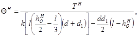
где ТН, l, d, d1 - то же, что в формуле (8); hOH - то же, что в формуле (7).
1.33. Расчетная величина изгибающего момента МZ определяется по формуле
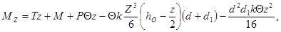
где Т, Р, М - соответственно расчетные величины горизонтальной, вертикальной силы, кН, и изгибающий момент, кНм, действующие на микросваю в уровне планировочной поверхности грунта; Z - координата произвольного сечения микросваи, м; Q - угол поворота микросваи, рад., определяемый по формуле (9) от расчетных нагрузок; hO - расстояние от поверхности грунта до точки поворота сваи в груше, м, определяемое по формуле (8) от расчетных нагрузок; k, d, d1 - то же, что в формуле (8).
1.34. Расчетная величина поперечной силы QZ определяется по формуле
QZ=T-kQz2(hO/2-z/3)(d+d1), (11)
где Т, Q, z, hO - то же, что в формуле (10); k, d, d1 - то же, что в формуле (8).
1.35. Конструирование и расчет прочности ствола сваи следует выполнять в соответствии с требованиями СНиП 2.03.01-84 с учетом максимального значения поперечной силы и изгибающего момента.
Максимальный изгибающий момент определяется в сечении, координата которого z находится из формулы (11) при приравнивании ее правой части нулю.
2.1. Конструкции пленочных теплиц следует рассчитывать на нагрузки от снега, ветра, массы растений, технологического оборудования и монтажные нагрузки. При проектировании передвижных теплиц необходимо учитывать нагрузки, возникающие при их перемещении.
2.2. При проектировании весенних рассадно-овощных обогреваемых теплиц сочетание нагрузок от снега и растений учитывать не следует.
2.3. При учете совместного воздействия снеговой и ветровой нагрузок усилия в элементах конструкций следует определять от суммарной снеговой и ветровой нагрузок. Расчет усилий от снега и ветра отдельно с последующим их сочетанием недопустим.
2.4. Нагрузки на каркас теплиц от воздействия ветра следует определять с учетом особенностей взаимодействия пленочного ограждения с каркасом.
2.5. Полимерные пленки для ограждений теплиц должны быть теплоудерживающими, атмосферостойкими и гидрофильными.
2.6. Пленки ограждений теплиц, предназначенных для выращивания рассады овощных культур для открытого грунта, должны пропускать не менее 70% ультрафиолетового излучения (УФ) зоны Б (290-330 нм). В теплицах с ограждением, открывающимся более чем на 60% общей его площади это требование не предъявляется.
2.7. Рекомендуемые типы пленок для ограждений теплиц приведены в табл. 7.
Таблица 7
|
Пленка |
ГОСТ, ТУ, марка |
Область применения |
|
|
Круглогодового использования |
Поливинилхлоридная |
ГОСТ 16272-79*, марка С |
В районах с температурой наиболее холодных суток не |
|
Полиэтиленовая стабилизированная, армированная полиэтиленом высокого давления |
ТУ 6-19-17-78, марка А |
Во всех районах |
|
|
Овощные сезонного использования |
Полиэтиленовая стабилизированная |
ГОСТ 10354-82" марки СТ и СИК |
Во всех районах |
|
Поливинилхлоридная |
ГОСТ 16272-79*, марка С |
В районах с температурой наиболее холодных суток не ниже минус 25°С |
|
|
Рассадно-овощные сезонного использования |
Полиэтиленовая нестабилизированная |
ГОСТ 10354-82*, марка СК |
Во всех районах |
|
Рассадно-овощные сезонного использования |
Полиэтиленовая стабилизированная |
ГОСТ 10354-82*, марки СТ и СИК |
В теплицах с ограждением, открывающимся более чем на 60% общей его площади |
|
Поливинилхлоридная |
ГОСТ 16272-79*, марка С |
В теплицах с ограждением, открывающимся более чем на 60% общей его площади в районах с температурой наиболее холодных суток не ниже минус 25°С |
2.8. Ограждения пленочных теплиц следует проектировать, как правило, криволинейного очертания. Пленка ограждений при ее натяжении должна плотно прилегать к конструкциям каркаса (аркам, прогонам).
2.9. При проектировании каркасов пленочных теплиц проволочные прогоны следует применять только оцинкованными.
2.10. Конструкция элементов каркаса теплиц должна обеспечивать возможность создания в пленке предварительного натяжения. Требуемая величина предварительного натяжения пленки NП, Н/м, по криволинейной поверхности ограждения определяется по формуле
NП=30ROMAX, (12)
где ROMAX - максимальный радиус поверхности ограждения, м.
2.11. Для уменьшения деформаций пленочных ограждений и нагрузок на элементы крепления пленки рекомендуется предусматривать ветровые канаты (натягиваемые поверх пленок) из стальной проволоки или тросов, защищенных пластмассовой оболочкой.
2.12. При проектировании теплиц сезонного использования с долговечными пленками (срок службы более 1 года) следует предусматривать возможность открывания кровли на период консервации сооружений при минимальных затратах ручного труда.
2.13. Пленочные ограждения теплиц должны иметь минимальную протяженность креплений.
2.14. Пленочные теплицы должны проектироваться с двухслойным ограждением. Весенние теплицы допускается проектировать с однослойным ограждением.
2.15. При проектировании двухслойных ограждений теплиц толщину наружной пленки следует принимать по расчету, но не менее 0,15 мм, внутренней пленки - 0,1 мм.
2.16. Пленочные ограждения теплиц рекомендуется выполнять крупногабаритными полотнищами. Стыки полотнищ следует предусматривать через 30-50 м по длине блочных теплиц с пролетом 4-6 м и через 15-20 м по длине ангарных теплиц пролетом 6-9 м.
2.17. Крупногабаритные полотнища изготавливаются из полотнищ заводской поставки с помощью тепловой контактной сварки, используя в качестве нагревательных приборов специальные сварочные ролики с электронагревом или обычные электроутюги с терморегулятором.
2.18. Стыки полотнищ устраиваются внахлест шириной 0,5-0,6 м, свободные края верхнего полотнища рекомендуется прижимать ветровыми канатами.
2.19. Схемы рекомендуемых узлов крепления пленки к элементам каркаса теплиц показаны на рис. 4.
Размеры элементов даны для закрепления пленки толщиной не более 0,2 мм, размеры и шаг расстановки гвоздей по расчету.
Краткая характеристика узлов крепления пленки приведена в табл. 8.
Рис. 4. Схемы рекомендуемых узлов крепления пленки к элементам каркаса теплиц
1 - закладная планка; 2 - пружинящий опорный элемент; 3 - пленка; 4 - пружинящий закладной элемент; 5 - опорный элемент; 6 - резиновый шнур; 7 - лирообразный опорный элемент; 8 - зажим; 9 - несущий элемент каркаса; 10 - гвоздь; 11 - планка; 12 - пластмассовый или металлический зажим; 13 - труба; 14 - насыпной грунт.
Рис. 5. Зависимость несущей способности крепления от соотношения размеров элементов крепления и толщины пленки
Таблица 8
|
Краткая характеристика |
|
|
С закладной планкой (рис. 4а) |
Несущая способность крепления превышает прочность пленки. Воспринимает только одностороннее усилие |
|
С пружинящим закладным элементом (рис. 4б) |
Несущая способность крепления превышает прочность пленки. Возможно совмещение элемента крепления с несущим элементом каркаса. Воспринимает только одностороннее усилие |
|
С помощью закладного резинового шпура (рис. 4в) |
Воспринимает двухстороннее усилие. Требует высокой точности изготовления элементов крепления. Зависимость несущей способности от размеров см. на рис. 5 |
|
С помощью стальной клямеры (рис. 4г) |
Воспринимает двухстороннее усилие. Низкая стабильность несущей способности. Требует периодической рихтовки клямер |
|
С помощью гвоздей и деревянной планки (рис. 4д) |
Простота изготовления. Высокая трудоемкость крепления |
|
Клямерами к трубчатым элементам (рис. 4е) |
Высокая несущая способность. Для обеспечения закрепления необходим поворот трубы вокруг оси на 1,5-2 оборота |
|
В грунте (рис. 4ж) |
Не требует специальных деталей. Высокая трудоемкость крепления. Сезонность выполнения работ. |
2.21. При расчете пленки ограждения каркас теплицы считается абсолютно жестким, динамические воздействия ветра не учитываются.
2.22. Усилия в пленке и ветровых канатах ограждения теплицы при очертании направляющих его поверхности по дуге окружности (рис. 6) определяется по формулам:
максимальные кольцевые погонные усилия Р1, Н/м
P1=q1R+NП (13)
максимальные продольные погонные усилия Р2, Н/м
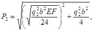
Рис. 6. Схема усилий в пленочном ограждении теплицы с ветровыми канатами
1 - элемент продольного закрепления пленки; 2 - ветровой канат; 3 - пленка ограждения
усилие в ветровом канате ТК, Н
ТК=q2bROMAX, (15)
где q1 - доля ветровой нагрузки, воспринимаемая продольными элементами закрепления пленки, Па, определяется по формуле (16); q2 - доля ветровой нагрузки, воспринимаемая ветровыми канатами, Па, определяется по формуле (17); R - радиус поверхности ограждения в деформированном состоянии, м, определяется по формуле (22); NП - усилие предварительного натяжения пленки, Н/м, определяется по формуле (12); b - расстояние между ветровыми канатами, м; Е - модуль упругости пленки, Па, определяется по СНиП 2.10.04-85; F - площадь сечения пленки шириной 1 м, м2; ROMAX - максимальный начальный радиус кривизны поверхности ограждения, м.
2.23. Доля ветровой нагрузки, воспринимаемая элементами закрепления пленки 1 и ветровыми канатами, Па, определяется по формулам
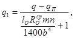
q2=q-qП-q1, (17)
где q - скоростной напор ветра на поверхности ограждения, Па определяемый по СНиП 2.01.07-85 и СНиП 2.10.04-85; qП - нагрузка на каркас от предварительного натяжения пленки, принимаемая равной 30 Па; lO - длина пленки между закреплениями по дуге, м, определяемая по формуле
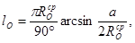
ROcр - средний начальный радиус кривизны поверхности ограждения, м, определяемый по формуле
ROcр=h/2-a2/8h, (19)
где а - хорда сегмента, соединяющая точки закрепления пленки по прямой, м; h - стрелка сегмента с хордой, м; m - коэффициент, определяемый по формуле
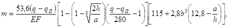
где n - коэффициент, определяемый по формуле
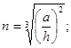
b - то же, что и в формуле (15).
2.24. Радиус поверхности ограждения в деформированном состоянии R, м, определяется по формуле
R=ROcpkc, (22)
где ROcp - то же, что и в формуле (16); k - коэффициент, определяемый по формуле
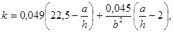
С - коэффициент, определяемый по формуле
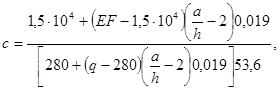
где а и h - то же, что и в формуле (19); b, Е, F - то же, что и в формуле (14); q - то же, что и в формуле (16).
2.25. При расчете пленочного ограждения без усиления ветровыми канатами следует принимать q1=q-qП; q2=0.
2.26. Напряжения в пленке ограждения от вычисленных усилии не должны превышать значений расчетных сопротивлений, приведенных в СНиП 2.10.04-85.
2.27. При расчете элементов каркаса теплиц на нагрузки от усилий в пленочном ограждении (рис. 6) направления последних определяются по формулам:
a = arcsin(a/2R)-g; (25)
b=90°-(a+2g), (26)
где a - угол между направлением кольцевых усилий в пленке Р1 в верхнем закреплении и горизонтальной плоскостью, град; а - то же, что и в формуле (19); R - то же, что в формуле (13); b - угол между направлением кольцевых усилий Р1 в нижнем закреплении и вертикальной плоскостью, град; g - угол наклона хорды а к горизонту.
2.28. Максимальное значение отрыва пленочного ограждения от каркаса f, м, определяется по формуле
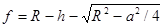
где R - то же, что в формуле (13); h и а - то же, что в формуле (19).
2.29. Пример расчета усилий в пленке ограждения теплицы от ветровой нагрузки приведен в прил. 2.
3.1. Указания настоящего раздела распространяются на проектирование системы экранирования шторного типа для однопролетных и многопролетных теплиц.
3.2. Экраны предназначаются для снижения топливно-энергетических затрат на отопление теплиц и притенения растений.
3.3. Экраны в зависимости от конструктивных решений теплиц, исполнения других технологических систем могут размещаться в объеме сооружений горизонтально, параллельно ограждениям или наклонно к горизонту. Шторы экранов следует располагать над приборами системы отопления и облучения растений.
3.4. Шторы экранов должны перемещаться (открываться и закрываться) преимущественно по направлению вдоль коньков теплиц в пределах каждого их шага.
3.5. В закрытом положении щели и зазоры в экранах должны быть минимальными, в открытом положении шторы следует располагать под элементами конструкций теплиц.
3.6. Система экранирования шторного типа (рис. 7) должна включать следующие основные элементы:
трансформирующиеся шторы;
неподвижные и подвижные элементы обрамления (усиления) кромок штор;
опорные тросы для подвешивания штор;
приводные тросы для перемещения штор;
Рис. 7. Вариант схемы системы экранирования в многопролетной теплице
1 - стойка теплицы; 2 - кровля; 3 - затяжка теплицы; 4 - трансформирующиеся шторы; 5 - опорные и приводные тросы; 6 - шпалерные опоры; 7 - опорные блоки; 8 - натяжное устройство; 9 - приводной вал; 10 - реверсивный мотор - редуктор
привод экранов, состоящий из приводных валов и реверсивного мотор-редуктора;
опорные блоки, путевые выключатели, крепежные детали.
3.7. При проектировании системы экранирования шторы следует предусматривать из эластичного материала и подвешивать к опорным тросам крепежными элементами через 0,4-0,6 м.
Допускается размещение штор непосредственно на опорных тросах.
3.8. Кромки отдельных штор экрана, воспринимающие усилия натяжения при их перемещении, следует обрамлять (усиливать) элементами из жесткого материала. При этом одна кромка шторы должна быть подвижной, вторая - неподвижной.
3.9. Открывание (закрывание) штор в зависимости от конструктивного решения теплиц и исполнения технологических систем следует предусматривать в одну или разные стороны от опорного элемента каркаса теплицы.
3.10. Площадь сечения элементов обрамления кромок штор следует определять расчетом. При этом стрела прогиба элементов обрамления между приводными тросами от максимального усилия в них не должна превышать 10 мм.
3.11. При проектировании системы экранирования расстояние между крайними тросами и элементами конструкций теплиц следует принимать не более 0,2 м.
3.12. Расстояние между приводными тросами (или количество их в каждом пролете теплицы) и площадь сечения тросов следует определять расчетом.
3.13. Для приводных и опорных тросов системы экранирования рекомендуется применять металло-пластмассовый трос по ТУ 14-170-120-80.
3.14. Непараллельность опорных и приводных тросов в пределах шага теплицы не должна превышать 20 мм.
3.15. Приводные и опорные тросы должны иметь натяжные устройства обеспечивающие их натяжение при монтаже, наладке и эксплуатации системы экранирования.
3.16. Привод системы экранирования должен обеспечивать равномерное возвратно-поступательное перемещение подвижных элементов обрамления штор и открывание их на заданную величину.
3.17. Узлы и детали системы экранирования должны быть взаимозаменяемыми и унифицированными с узлами и деталями других технологических систем, применяемых в теплицестроении.
3.18. Конструкция и исполнение привода экрана должны учитывать неблагоприятные условия эксплуатации (высокую влажность, переменную температуру, агрессивную среду).
3.19. Привод экрана должен обеспечивать постоянную поступательную скорость перемещения подвижных кромок штор. Время их открывания (закрывания) не должно превышать 5 мин.
3.20. Привод экрана должен быть оборудован путевыми выключателями, обеспечивающими прекращение перемещения подвижных кромок штор в крайних положениях.
3.21. Способы передачи усилия от приводного вала к приводным тросам показаны на рис. 8.
3.22. При проектировании привода системы экранирования угловую скорость, длину рабочего участка и расстояние от оси приводного вала до оси опорных блоков следует определять расчетом.
3.23. Угловая скорость приводного вала n, об/мин, определяется по формуле
n=S/[pT(D+d)], (28)
где S - путь подвижной кромки шторы при полном ее перемещении, м; Т - время полного перемещения шторы, мин; D - диаметр приводного вала м; d - диаметр приводного троса, м.
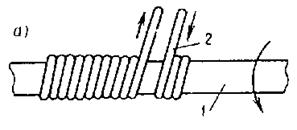
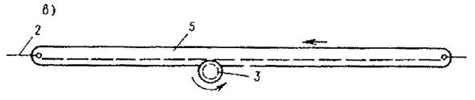
Рис. 8. Способы передачи усилия от приводного вала к приводным тросам
а - передача "вал - трос"; б - цепная передача; в - реечная передача; 1 - приводной вал; 2 - приводной трос; 3 - шестерня; 4 - цепь; 5 – рейка
3.24. Длина рабочего участка приводного вала L, м, (рис. 9) определяется по формуле
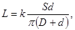
где k - коэффициент запаса троса на рабочем участке, принимаемый равным 1,2 - 1,5; S, D, d - то же, что в формуле (28).
3.25. Расстояние от оси приводного вала до оси опорных блоков h, м (см. рис. 9), определяется по формуле
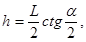
где a - угол, образованный профилем ручья блока, град; L -то же, что в формуле (29).
Рис. 9. Схема к расчету привода системы экранирования
1 - приводной вал; 2 - приводной трос; 3 - опорные блоки
3.26. Материал экранов овощных теплиц должен обладать максимальными теплоудерживающими, а рассадных теплиц - теплоудерживающими и светоотражающими свойствами. Для повышения теплоудерживающих и светоотражающих свойств материала экранов допускается со стороны внутренней поверхности на несгибаемых частях складок закреплять полосы металлизированной пленки типа ПЭТФ, ориентированные поперек направления перемещения штор.
3.27. Физико-технические характеристики материала должны соответствовать следующим показателям:
толщина не более 0,6 мм
масса 1м2 не более 0,125 кг
предел прочности при растяжении:
по длине не менее 600 кПа
по ширине не менее 500 кПа
относительное удлинение при разрыве:
по длине 21%
по ширине 30%
3.28. Для штор экранов рекомендуется применять клееное нетканое полотно по ТУ 17 РСФСР 52-9676-82 или нетканое углопробивное нетермоскрепленное полотно по ТУ 17 РСФСР 52-2403-85.
3.29. Припуск на длину и ширину отдельных штор должен составлять не менее 10% линейных размеров перекрываемого шторой проема,
3.30. При проектировании системы экранирования необходимо предусматривать управление экранами от программно-временного устройства, а при наличии системы автоматического управления микроклиматом теплиц на базе микропроцессорной техники - по специальной программе. Пример технологической схемы управления экрана приведен на рис. 10.
3.31. Шторы должны закрываться с постоянной скоростью, а открываться по многопозиционному закону (МПЗ) в следующем порядке: открывание 10% - пауза - открывание 15% - пауза - открывание 20% - пауза - открывание до крайнего положения экрана.
Рис. 10. Технологическая схема управления теплозащитным экраном
ПЭ - привод экрана; ИМ - исполнительный механизм; КВ - конечный выключатель; ДУП - дистанционный указатель положения; ПП1 - ПП3 - выносные первичные преобразователи; ПП4 - ПП7 - первичные преобразователи в теплице; ПВУ - программно-временное устройство; ПУЭ - подпрограмма управления экраном
3.32. При использовании многопрограммных реле для отработки МПЗ уставки лимбов программ определяются расчетом по формулам:
для программ с нечетными номерами
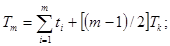
для программ с четными номерами
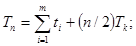
где Тm, Тn - уставки лимбов программ, мин; m, n - номера соответствующих программ; ТK - длительность паузы, мин; ti - длительность работы привода экрана, мин, определяемая по формуле
ti=(TЭai)/100, (33)
где ТЭ - время полного хода экрана, мин; аi - величина i-й ступени открывания экрана, %.
3.33. При автоматическом управлении экраном должен реализовываться алгоритм, определяющий положение экрана (РЭ) в зависимости от сочетания следующих факторов: параметров технологического режима (Тр), температуры (ТВ) и относительной влажности (j) воздуха в теплице, уровня солнечной радиации (Е) , а также режима работы отопительных приборов (РК). Блок-схема алгоритма показана на рис. 11, а идентификаторы приведены в табл. 9.
Таблица 9
|
Наименование параметров |
Единица измерения |
|
|
+U |
Управляющее воздействие на закрытие экрана |
% хода исполнительного механизма |
|
-U |
Управляющее воздействие на открытие экрана |
То же |
|
j |
Оставить исполнительный механизм в текущем положении |
" |
|
РЭ |
Положение экрана |
1; 0 |
|
РО |
Наличие сигнала на датчике осадков |
1; 0 |
|
ТН |
Текущее значение наружной температуры воздуха |
°С |
|
ТВ |
Текущее значение температуры воздуха в теплице |
°С |
|
Е |
Интегральное значение уровня солнечной радиации |
Дж/м2 |
|
jВ |
Текущее значение относительной влажности воздуха в теплице |
% |
|
РВК |
Текущее положение смесительного клапана верхнего контура обогрева |
% |
|
РНК |
Текущее положение смесительного клапана нижнего контура обогрева |
% |
|
ТВ.З, jВ.З, Еmin, Emax |
Предписанные значения параметров микроклимата теплицы |
- |
|
ТНЕЧ, jНЕЧ, ЕНЕЧ |
Зоны нечувствительности по температуре и относительной влажности воздуха и по уровню солнечной радиации |
- |
3.34. Алгоритм предусматривает запрет на закрытие экрана при снегопадах. Режим "снегопад" должен определяться наличием сигнала на датчике осадков (РО=1) при отрицательных температурах наружного воздуха (ТН<°С).
3.35. Алгоритм предписывает нахождение штор в закрытом положении на протяжении режима "ночь" и во время технологических переходов "день-ночь" и "ночь-день". При превышении заданного значения относительной влажности воздуха в теплице в режиме "ночь" предусматривается частичное открывание экрана.
3.36. В режиме "день" допускается закрытие экрана при соответствующем сочетании следующих факторов: уровня солнечной радиации (Е), температуры воздуха в теплице (ТВ) и положения смесительного клапана (РК).
Пороговые значения ЕMIN, ЕMAX, ТВ.З должны задаваться агрономическими службами тепличных комбинатов.
Рис. 11. Блок-схема алгоритма формирования управляющих воздействий о системе экранирования теплицы
4.1. Теплотехнический расчет распространяется на проектирование вновь строящихся и реконструируемых теплиц с однослойным стеклянным ограждением.
4.2. Целью теплотехнического расчета теплиц является определение основных теплотехнических характеристик отопительной системы (расхода тепла и теплоносителя, требуемой поверхности нагревательных приборов, мощности калориферного обогрева), исходя из условия обеспечения параметров микроклимата, регламентируемых нормами технологического проектирования в зависимости от наружных климатических условий и конструктивных параметров сооружения.
4.3. Теплотехнический расчет основан на решении системы уравнений теплового баланса теплиц, в которую входят уравнения сохранения тепла и массы для всех объемов и поверхностей сооружений, участвующих в тепло- и массообмене.
4.4. Тепловой баланс теплиц рассматривается при следующих исходных данных:
расчет проводится для ночного режима эксплуатации теплиц без растений;
процессы тепло- и массообмена в сооружениях приняты стационарными;
температуры ограждения и почвы принимаются как средние по площади их поверхности, температура воздуха - как средняя по объему, термическое сопротивление светопрозрачного ограждения принято равным нулю;
влияние температуры приборов отопления и их размещения, концентрации углекислого газа и влажности воздуха на коэффициент поглощения энергии излучения воздухом теплицы не учитывается;
воздухообмен в теплице осуществляется только путем инфильтрации наружного воздуха;
надбавка к теплопотерям на инфильтрацию холодного наружного воздуха принимается в процентах от теплопотерь ограждений в зависимости от разности плотностей наружного и внутреннего воздуха;
различия в теплоотдаче нагревательных приборов в зависимости от их расположения не учитываются, расчет проводится по осредненному для всех приборов коэффициенту облученности;
при расчете водяного трубного обогрева температура поверхности почвы принимается равной расчетной температуре воздуха в теплице;
при определении расчетных теплопотерь теплиц аккумулированное почвой тепло не учитывается;
при расчете водяной трубной системы отопления для всех климатических зон тепловой поток от подпочвенного обогрева принимается неизменным;
относительная влажность воздуха в теплице считается заданной, то есть уравнение баланса влагообмена в расчетах не используется;
при проектировании трубного водяного отопления расчетная температура воздуха в овощных теплицах принимается 15°С, относительная влажность 60%, температура поверхности почвы 15°С.
4.5. Для шатрового обогрева теплиц применяются трубные, воздушные и комбинированные системы отопления. В качестве приборов используются гладкие и ребристые трубы, газовые горелки и агрегаты, электрокалориферы. Почва обогревается путем пропускания горячей воды и воздуха по трубам и каналам, расположенным в грунте,
4.6. Целесообразность применения того или иного решения системы отопления должна определяться технико-экономическими расчетами.
4.7. Для поддержания параметров внутреннего климата на заданном уровне следует предусматривать автоматическое регулирование системы отопления и вентиляции.
Рис. 12. График для определения теплопотерь теплицы
Q - теплопотери шатра теплицы, Вт на 1 м2 площади теплицы; k - коэффициент ограждения; температура наружного воздуха: 1 - tH= -10°С; 2-tH= -20°С; 3 - tH=-30°С; 4-30°С=-40°С; 5-tH=-50°С
Рис. 13. График для определения требуемой поверхности нагревательных трубопроводов
FTP - требуемая поверхность нагревательных трубопроводов, м на 1 м2 площади теплицы; Q - теплопотери шатра теплицы, Вт на 1 м2 площади теплицы; начальная температура теплоносителя: 1-tH=95°С; 2-tT=130°С
4.9. Скорость теплоносителя в нагревательных приборах должна соответствовать турбулентному режиму.
4.10. Пример расчета системы отопления теплицы с гладкими трубами приведен в прил. 3.
4.11. При проектировании системы отопления с оребренными трубами должны предусматриваться как ребристые (оребренные трубы или конвекторы без кожуха), так и гладкие трубы.
4.12. Гладкотрубные отопительные приборы следует использовать в качестве трансформирующегося напочвенного обогрева, ребристые отопительные приборы необходимо размещать у вертикальных ограждений и в объеме теплицы (стационарный обогрев).
Рис. 14. График для определения теплопотерь теплицы с оребренными трубами системы обогрева
Q - теплопотери теплицы, Вт на 1 м2 площади теплицы; k - коэффициент ограждения; скорость ветра: 1 - v = 3 м/с; 2 - v= 6 м/с; 3 - v =9 м/с; 4 - v=12м/с
4.13. Теплопотери теплицы следует определять по графику рис. 14, построенному по результатам решения системы уравнений теплового баланса, включающей уравнения баланса на поверхности почвы, ограждений и нагревательных приборов, а также уравнение теплового баланса для всего сооружения.
4.14. Требуемая поверхность гладких труб ребристых приборов, приходящаяся на единицу площади теплицы FP, м2/м2, определяется по формуле
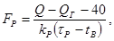
где Q - теплопотери теплицы, определяемые по графику рис. 14; QГ - теплоотдача гладких труб, приходящаяся на единицу площади теплицы, Вт/м2, определяется по формуле (35); kP - коэффициент теплопередачи ребристого прибора, Вт/(м2×°С), определяется по формуле (38); tP - средняя температура поверхности ребристого прибора, °С, определяется по формуле (47); tB - расчетная температура воздуха в теплице, °С.
4.15. Теплоотдача гладких труб в теплицу QГ, Вт/м2, определяется по формуле
QГ=kГ(tcp-tB)FГ, (35)
Рис. 15. График для определения коэффициента конвективного теплообмена для гладкой трубы
наружный диаметр трубы: 1 - dH=0,076 м; 2 - dH=0,057 м; 3 - dH=0,045 м; 4 - dH=0,038 м
где kГ - коэффициент теплопередачи гладких труб, Вт/(м2×°С), определяется по формуле (36); tcp - средняя температура теплоносителя, °С, определяемая как средняя арифметическая между начальной его температурой tT и конечной температурой tK; tB – то же, что в формуле (34); FГ - поверхность гладких труб напочвенного обогрева, приходящаяся на единицу площади теплицы, м2/м2, и принимаемая на основании технологических и других требований.
Рис. 16. График для определения удельного теплового потока излучением от гладкой трубы на почву
1 - eГeП=0,2; 2 - eГeП=0,4; 3 - eГeП=0,6; 4 - eГeП=0,8; 5 - eГeП=1; eГ - степень черноты трубы; eП - степень черноты почвы
Рис. 17. График для определения удельного теплового потока излучением от гладкой трубы на ограждения
eГ - степень черноты трубы; eО – степень черноты ограждений; температура ограждений: 1 - tО=+5°С; 2 - tО=-5°С; 3 - tО=-15°С; 4 - tО=-25°С
4.16. Коэффициент теплопередачи гладких труб kГ, Вт/(м2×°С), определяется по формуле
kГ=aГК+aГЛ, (36)
где aГК - коэффициент конвективного теплообмена гладкой трубы, Вт/(м2×°С), определяемый по графику рис. 15; aГЛ - коэффициент теплообмена излучением гладкой трубы, Вт/(м2×°С), определяется по формуле (37).
4.17. Коэффициент теплообмена излучением гладкой трубы aГЛ, Вт/(м2×°С), определяется по формуле
aГЛ=(qГП+qГО)/(tcp-tB), (37)
где qГП - удельный тепловой поток излучением от гладкой трубы на почву, Вт/м2, определяемый по графику рис. 16; qГО - удельный тепловой поток излучением от гладкой трубы на ограждение, Вт/м2, определяемый по графику рис. 17; tcp - то же, что в формуле (35); tB - то же, что в формуле (34).
4.18. Коэффициент теплопередачи ребристого прибора kP, Вт/(м2×°С), определяется по формуле
kP=1/(1/aПР+ROP), (38)
где aПР - приведенный коэффициент теплоотдачи оребренной трубы, Вт/(м2×°С), определяется по формуле (39); ROP - термическое сопротивление оребрения, м2×°С/Вт, определяется по формуле (44).
4.19. Приведенный коэффициент теплоотдачи оребренной трубы aПР, Вт/(м2×°С), определяется по формуле
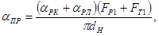
где aРК - коэффициент конвективного теплообмена ребристой трубы, Вт/(м2×°С), определяется по формуле (40); aРЛ - коэффициент теплообмена излучением ребристой трубы, Вт/(м2×°С), определяется по формуле (41); FP1 - площадь поверхности ребер, приходящаяся на 1 м прибора, м2/м; FT1 - площадь поверхности гладкой трубы между ребрами, приходящаяся на 1 м прибора, м2/м; dH - наружный диаметр трубопровода, м.
4.20. Коэффициент конвективного теплообмена ребристой трубы aРК, Вт/(м2×°С), определяется по формуле
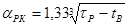
Рис. 18. График для определения коэффициента jP
1 - dH/D=0,43; 2 - dH/D=0,66; 3 - dH/D=0,79
где tP и tB - то же, что в формуле (34).
4.21. Коэффициент теплообмена излучением ребристой трубы aрл, Вт/(м2×°С), определяется по формуле
aрл=(qРП+qРО)/(tР-tВ), (41)
где qРП - удельный тепловой поток излучением от ребристой трубы на почву, Вт/м2, определяется по формуле (42); qРО - удельный тепловой поток излучением от ребристой трубы на ограждения, Вт/м2, определяется по формуле (43); tР и tВ - то же, что в формуле (34).
4.22. Удельный тепловой поток излучением от ребристой трубы на почву qРП, Вт/м2, определяется по формуле
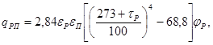
где eР - степень черноты ребристого прибора; eП - степень черноты поверхности почвы; tР - то же, что в формуле (34); jР - коэффициент, определяемый но графику рис. 18.
4.23. Удельный тепловой поток излучением от ребристой трубы на ограждения qРО, Вт/м2, определяется по формуле
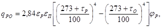
Рис. 19. График для определения температуры ограждений
скорость ветра: 1 - v=м/с; 2 - v=6 м/с; 3 - v=3 м/с
где eР - то же, что в формуле (42); eО - степень черноты ограждений; tР - то же, что в формуле (34); tО - температура ограждений, °С, определяемая по графикам рис. 19; jР - то же, что в формуле (42).
4.24. Термическое сопротивление оребрения ROP, м2×°С/Вт, определяется по формуле
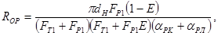
где FT1, FP1, dH - то же, что в формуле (39); Е - коэффициент термической эффективности ребра, определяемый в соответствии с указаниями п. 4.25; aPK -коэффициент, определяемый по формуле (40); aPЛ - коэффициент, определяемый по формуле (41).
Рис. 20. График для определения коэффициента термической эффективности ребра m
1 - m=25; 2 - m=20; 3 - m=15; 4 - m=10; 5 - m=5
4.25. Коэффициент термической эффективности ребра Е определяется по графику рис. 20 в зависимости от приведенной высоты ребра h' и коэффициента m, вычисляемые по формулам
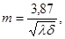
где h - высота ребра от поверхности трубы, м; D - диаметр ребра, м; dH - то же, что в формуле (39); l - коэффициент теплопроводности материала ребра, Вт/(м×°С); d - толщина ребра, м.
4.26. Средняя температура поверхности ребристого прибора tP, °С, определяется по формуле
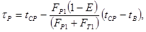
где tCP - то же, что в формуле (35); FP1 и FT1 - то же, что в формуле (39); Е - то же, что в формуле (44); tB - то же, что в формуле (34).
4.27. Расход теплоносителя в гладких трубах, приходящийся на единицу площади теплицы GГ, кг/(с×м2), определяется по формуле
GГ=QГ/[c(tT-tK)], (48)
где QP - то же, что в формуле (34); c - удельная теплоемкость теплоносителя, Дж/(кг×°С); tT - начальная температура теплоносителя, °С; tK - конечная температура теплоносителя, °С.
4.28. Расход теплоносителя в ребристых трубах, приходящийся на единицу площади теплицы G, кг/(с×м2), определяется по формуле
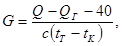
где Q и QГ - то же, что в формуле (34); с, tT и tK - то же, что в формуле (48).
4.29. Пример расчета системы отопления теплицы с оребренными трубами приведен в прил. 4.
4.30. При комбинированной системе отопления в теплицах предусматривается обогрев гладкими трубами и агрегатами воздушного обогрева.
Рис. 21. График для определения теплопотерь теплицы с комбинированной системой обогрева при максимальной мощности калориферного обогрева
Q - теплопотери шатра теплицы, Вт на 1 м2 площади сооружения; k - коэффициент ограждения; tH - температура наружного воздуха, °С; 1 - S=0,4 м; 2 - S=1,5 м; S - шаг трубопроводов подпочвенного обогрева
4.31. Теплопотери, требуемые поверхности нагревательных приборов и максимальная тепловая мощность калориферного обогрева для теплиц с подпочвенным обогревом определяются по графикам рис. 21 - 24, построенным по результатам решения системы уравнений теплового баланса, включающей уравнения баланса на поверхности почвы, ограждения и нагревательных приборов, уравнение теплового баланса для объема теплицы, при относительной влажности внутреннего воздуха 60%, температуре поверхности почвы 15 °С и начальной температуре теплоносителя 130°С.
Для промежуточных значений климатических факторов и геометрических характеристик теплицы максимально допустимая мощность воздушного обогрева определяется интерполяцией.
4.32. Окончательный выбор тепловой мощности воздушного обогрева при комбинированной системе отопления следует производить с учетом области ее наибольшей экономической эффективности, приведенной в табл. 10.
Рис. 22. Графики для определения требуемой поверхности трубопроводов шатрового обогрева при максимальной мощности калориферного обогрева и шаге трубопроводов подпочвенного обогрева S=1,5 м
l - пролет теплицы; температура наружного воздуха: 1 - tH=-20°С; 2 - tH=-30°С; 3 - tH=-40°С
4.33. При назначении мощности воздушного обогрева менее максимально допустимых величин, соответствующие теплопотери шатра теплицы определяются интерполяцией между значениями теплопотерь при водяном трубном отоплении и значениями теплопотерь при максимальной мощности воздушного обогрева.
4.34. Пример расчета теплицы с системой комбинированного обогрева приведен в прил. 5.
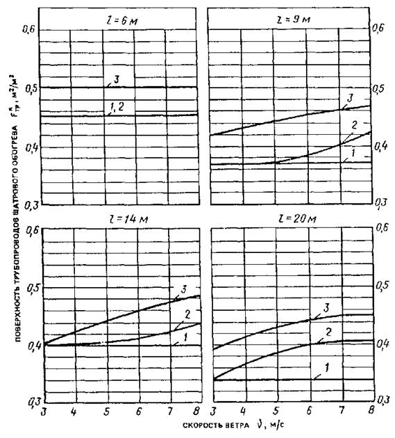
Рис. 23. Графики для определения требуемой поверхности трубопроводов шатрового обогрева при максимальной мощности калориферного обогрева и шаге трубопроводов подпочвенного обогрева S=0,4 м
l - пролет теплицы; температура наружного воздуха: 1 - tH=-20°С; 2 - tH=-30°С; 3 - tH=-40°С
Рис. 24. Графики для определения максимальной мощности калориферного обогрева h
S - шаг трубопроводов подпочвенного обогрева, м; tH - температура наружного воздуха; пролет теплицы; 1 - l=6 м; 2 - l=9 м; 3 - l=14 м; 4 - l=20м
Таблица 10
|
Шаг труб подпочвенного обогрева S, м |
Пролет теплицы l, м |
Скорость ветра u, м/с |
|||||
|
4 |
5 |
6 |
7 |
8 |
|||
|
Ангарные теплицы |
|||||||
|
-30 |
0,4 |
14-20 |
25-35 |
30-40 |
35-45 |
35-45 |
35-50 |
|
1,5 |
14-20 |
- |
25-35 |
25-35 |
30-40 |
30-40 |
|
|
-40 |
0,4 |
14-20 |
35-45 |
35-45 |
40-50 |
40-50 |
40-50 |
|
1,5 |
14-20 |
30-40 |
30-40 |
30-40 |
35-45 |
35-45 |
|
|
Блочные теплицы |
|||||||
|
-30 |
0,4 |
6-9 |
- |
10-20 |
15-25 |
15-25 |
20-30 |
|
1,5 |
6-9 |
- |
- |
15-25 |
15-25 |
20-30 |
|
|
-40 |
0,4 |
6-9 |
15-25 |
20-30 |
20-30 |
25-35 |
30-35 |
|
1,5 |
6-9 |
- |
20-30 |
20-30 |
25-35 |
25-35 |
|
5.1. Мероприятия по защите теплиц от снегозаносов подразделяются на пассивные и активные. Пассивные мероприятия предусматривают использование естественной снегозащиты и специальных архитектурно-планировочных приемов. К активным средствам снегозащиты относятся снегозащитные лесонасаждения, постоянные заборы, переносные щиты и механизированное снегозадержание (снежные стенки, траншеи).
5.2. Для строительства теплиц не рекомендуются площадки, располагаемые:
в зонах снижения скоростей ветра и в зонах завихрений у естественных препятствий;
у подошв наветренных склонов и на подветренных склонах, если эти участки не защищены с наветренной стороны растительностью.
С целью меньшей снегозаносимости теплиц площадки для их строительства следует располагать:
с подветренной стороны лесов, рощ, понижений рельефа в виде русла рек, оврагов, балок, незамерзающих водных поверхностей;
на наветренных склонах возвышенностей;
на террасообразных уступах - ближе к краю террасы.
5.3. Для уменьшения отрицательного воздействия снежных заносов теплицы рекомендуется располагать в плане продольной осью по направлению преобладающих переносов снега.
5.4. Снегозащитные средства способствуют снижению скорости снеговетрового потока и отложению снега у защиты.
5.5. Наибольшей снегозадерживающей способностью обладают снегозащиты, составляющие прямой угол с преобладающим направлением зимних метелевых ветров. При ветрах, составляющих с защитным ограждением угол менее 30°, большая часть снега проносится вдоль защиты, не задерживаясь около нее.
5.6. Проектирование средств снегозащиты должно выполняться индивидуально для каждого тепличного комбината с учетом топографических условий окружающей местности.
5.7. Виды снегозащитных ограждений и их сочетания в каждом конкретном случае должны назначаться, исходя из расчета их снегосборной способности и технико-экономического сравнения вариантов.
5.8. Применяемые снегозащитные устройства должны обладать достаточной долговечностью и прочностью, задерживать возможно большее количество переносимого снега.
5.9. Снегозащитные переносные деревянные щиты следует использовать в районах с годовыми объемами снегопереноса до 400 м3/м, а в районах с большим объемом снегопереноса их можно использовать в сочетании с другими ограждениями или в качестве временной меры до организации постоянной снегозащиты.
5.10. Переносные щиты изготавливают из деревянных планок толщиной 13 мм и шириной 80 - 110 мм, они бывают с нормальной и разреженной обрешеткой.
5.11. Снегозащитные щиты с нормальной обрешеткой изготавливают шириной 2 м и высотой 1,75 - 2,25 м. Площадь просветов щитов должна составлять 35 - 50%. Пример конструктивного решения щита с нормальной обрешеткой приведен на рис. 25.
5.12. Снегозадерживающие щиты с разреженной решеткой должны изготавливаться 2´2 м и иметь площадь просветов в нижней половине 60 - 70%, а в верхней - 40 - 50%. Пример конструктивного решения щита с разреженной решеткой приведен на рис. 26.
5.13. Снегозадерживающие щиты с нормальной обрешеткой применяют в районах, где продолжительные метели с плотным и мокрым снегом сопровождаются сильными ветрами и перестановка щитов затруднена. Щиты с разреженной решеткой применяют в условиях незначительной скорости ветра, где возможна их перестановка.
5.14. В зависимости от объемов переносимого снега в районе строительства теплиц щиты следует устанавливать в один или несколько рядов. При многорядной защите первые со стороны поля ряды рекомендуется устанавливать из щитов с разреженной решеткой.
Рис. 25. Снеговой щит с нормальной обрешеткой
5.15. Расстояние от теплицы до однорядной или первого ряда многорядной снегозащиты, а также между ее рядами следует принимать равным 15h (где h - высота щитов, м).
5.16. Опорные колья для щитов заготавливают длиной 2 - 3,5 м и толщиной 7 - 8 см с заостренными нижними концами. Колья устанавливают в грунт до наступления заморозков в отверстия диаметром 7 - 7,5 см и глубиной 40 - 60 см на расстоянии 1,9 м друг от друга.
5.17. Расстановка и привязка щитов к кольям производится сразу после образования устойчивого снежного покрова. Щиты к кольям привязывают в верхних углах с наветренной стороны накрест проволокой или веревкой.
5.18. Для увеличения снегосборности и во избежание примерзания к земле щиты устанавливают с просветом от земли, равным 0,4 м.
5.19. Перестановку щитов производят после заноса их снегом на 3/4 высоты. Первую перестановку щитов делают в сторону поля на расстояние 20 м от линии первоначальной установки щитов. Последующие перестановки производят на верху снежного вала в сторону объекта каждый раз, когда высота снежного отложения у щитов будет достигать 2/3 их высоты (рис. 27).
Рис. 26. Снеговой щит с разреженной обрешеткой
5.20. Снегосборные постоянные заборы рекомендуется использовать в районах с годовыми объемами снегопереноса до 600 м3/м, а в сочетании с переносными щитами - в районах с более высокими объемами снегопереноса.
5.21. Снегозащитные постоянные заборы подразделяются на деревянные и железобетонные, с нормальной и разреженной решеткой.
5.22. Деревянные заборы устраивают высотой от 4 до 7 м, снегосборная способность таких заборов составляет 140 - 360 м3/м.
5.23. Деревянные заборы с нормальной решеткой рекомендуется применять в относительно слабо заносимых районах при ограниченной площади, отводимой под снегозащиту. Пример конструктивного решения забора с нормальной решеткой приведен на рис. 28.
Рис. 27. Схема перестановки щитов 1, 2, 3, 4 - порядок перестановки щитов; -- . ---. --- - граница объекта
Рис. 28. Деревянный забор с нормальной обрешеткой
5.24. Деревянные заборы с разреженной обрешеткой (рис. 29) рекомендуется применять в сильно заносимых районах. Они формируют сугроб снега большой ширины, что требует увеличенной площади отводимого под защиту земельного участка.
5.25. При проектировании снегозащиты допускается предусматривать заборы со съемными щитами (рис. 30). После полного использования снегозащитной способности таких заборов щиты снимают со столбов и используют как переставные.
Рис. 29. Деревянный забор с разреженной обрешеткой
Рис. 30. Деревянный забор со съемными щитами
5.26. Обрешетку деревянных заборов в нижней половине следует выполнять вертикальной, а в верхней - она может быть вертикальной или горизонтальной.
5.27. Постоянные снегозащитные заборы из железобетонных конструкций выполняют с горизонтальной или вертикальной обрешеткой. Стандартная высота железобетонных заборов равна 4; 5,5 и 7 м.
5.28. Постоянные заборы допускается устраивать комбинированными, состоящими из железобетонных стоек и деревянных щитов или обшивок.
5.29. Расстояние между низом обшивки забора и поверхностью земли, а также между нижним и верхним рядами обрешетки для постоянных заборов следует назначать в пределах 0,4 - 0,7 м.
5.31. Расстояние от теплицы до линии зашиты следует принимать равным (5-10) Н, а между рядами многорядной защиты - (10-15) Н (где Н - высота забора, м).
5.32. Снегозащитные лесонасаждения следует проектировать во всех районах страны.
5.33. Снегозащитные лесонасаждения делятся на сплошные многорядные с числом деревьев до 20 - 40 и кулисные, состоящие из нескольких кулис с числом рядов деревьев в каждой кулисе до 10 - 12.
Рис. 31. Схемы лесонасаждений и размещения в них древесных и кустарниковых пород
а - лесонасаждение в 14 рядов; б - кулисное лесонасаждение для районов с малой снегозаносимостью; в - кулисное лесонасаждение для районов со значительной снегозаносимостью; --- . --- . --- - граница объекта
Кулисные лесонасаждения обладают большей снегосборной способностью по сравнению со сплошными, но требуют большей площади земельного участка.
5.34. По степени продуваемости ветром, зависящей от количества рядов деревьев и густоты их посадки, снегозащитные лесонасаждения делятся на непродуваемые и продуваемые. При одинаковой снегосборности ширина продуваемого лесонасаждения на 30 % меньше непродуваемого, но расстояние от защищаемого объекта до продуваемого лесонасаждения должна быть в два раза больше, чем до непродуваемого.
5.35. Примерные схемы снегозащитных лесонасаждений и размещение в них древесных кустарниковых пород приведены на рис. 31.
5.36. Расстояние между рядами растений в снегозащитных лесонасаждениях следует принимать равным 1 - 3 м, а между деревьями в рядах 0,7 - 1,5 м. Для увеличения снегосборной способности лесонасаждений в молодом возрасте рекомендуется сгущать посадки в рядах с доведением расстояния между растениями до 0,4 м с последующей вырубкой.
5.37. Расстояние между кулисами следует принимать равным десятикратной расчетной (работающей) высоты деревьев. В малозаносимых районах разрыв между кулисами можно не делать, а заполнять его кустарником.
5.38. Расстояние от теплиц до узкой продуваемой полосы следует принимать не менее пятикратной, а до широкой непродуваемой не менее двукратной расчетной (работающей) высоты лесонасаждений.
5.39. При проектировании кулисных лесонасаждений в сильно заносимых районах кустарники следует вводить только в опушечные ряды двух-трех кулис, расположенных со стороны защищаемого объекта. Остальные кулисы рекомендуется проектировать без кустарников.
5.40. При выборе деревьев и кустарников для лесонасаждений необходимо отдавать предпочтение быстрорастущим породам, которые растут в данной местности. Быстрорастущие породы деревьев высаживают в возрасте 1 - 2 года.
5.41. Деревья лесонасаждений делятся на:
слабоветвистые (дуб летний, клен остролистый, ясень американский);
средневетвистые (береза, вяз, берест, клен ясенелистный);
сильноветвистые (клен татарский);
кустарники (лох узколистный, жимолость татарская, акация желтая).
Предпочтение следует отдавать сильноветвистым деревьям.
5.42. В зависимости от метеорологических условий принята следующая классификация метелей:
верховая метель - снегопад при скорости ветра до 6 м/с;
низовая метель - без выпадения снега при скорости ветра более 6 м/с;
общая метель - совокупность верховой и низовой метели при скорости ветра 6 м/с и более.
5.43. Метели характеризуются тремя закономерностями:
метель развивается при скорости ветра свыше 5 - 6 м/с и температуре наружного воздуха от -2°С до -10°С; при скорости ветра 2,7 м/с основная масса снега выпадает из снеговетрового потока;
основная масса снега (около 90 %) переносится непосредственно в приземном слое высотой до 20 см;
интенсивность переноса метелевого снега над поверхностью снежного покрова пропорциональна энергии ветра или кубу его скорости.
5.44. Расчет снегозащиты основывается на том, что ее снегосборная способность должна быть равна или больше расчетных годовых объемов снегопереносов.
VP£VЗ, (50)
где VP - расчетный объем снегопереноса, м3/м, определяемый в соответствии с указаниями пп. 5.45-5.49; VЗ - снегосборная способность зашиты, м3/м, определяемая в зависимости от средств защиты в соответствии с указаниями пп. 5.51-5.53.
5.45. Расчетный объем снегопереноса, VP, м3/м, определяется по формуле
VP=pkV, (51)
где р - эмпирический коэффициент, равный 0,9 при определении годового объема снегопереноса по п. 5.48 и 0,7 - по п. 5.49; k - коэффициент, зависящий от длины снегосборного бассейна и определяемый в соответствии с указаниями пп. 5.46 и 5.47. V - годовой объем снегопереноса, м3/м, определяемый в соответствии с указаниями пп. 5.48 и 5.49.
5.46. Коэффициент k определяется по табл. 11 в зависимости от длины снегосборного бассейна.
Таблица 11
|
Длина снегосборного бассейна, км |
||
|
в Западной Сибири и юго-востоке европейской части СССР |
в европейской части СССР, за исключением юго-востока |
|
|
0,9 |
8,1 |
10,6 |
|
0,8 |
5,6 |
7,4 |
|
0,7 |
4,2 |
5,4 |
|
0,6 |
3,2 |
4,2 |
|
0,5 |
2,4 |
3,2 |
|
0,4 |
1,8 |
2,4 |
|
0,3 |
1,2 |
1,6 |
|
0,2 |
0,8 |
1 |
|
0,1 |
0,4 |
0,5 |
5.47. За длину снегосборного бассейна принимается расстояние от ограждения теплиц до границ естественных преград. Естественными преградами снегосборного бассейна считаются:
лесные массивы шириной более 100 м;
речные долины и овраги шириной более 100 м при глубине не менее 10 м и крутизне склонов 1:1 и более;
кустарниковые заросли шириной более 250 м;
жилые поселки и промышленные комплексы.
Методика определения годовых объемов снегопереносов приведена в прил. 6.
5.49. При отсутствии метеорологической станции в районе строительства годовой объем снегопереноса и преобладающее направление снего-ветровых потоков допускается принимать, руководствуясь картой районирования территории СССР по объемам переноса снега по СНиП 2.01.01-82 с учетом розы ветров в зимний период года.
5.50. Снегосборная способность ограждений зависит от их типа, конструкции, высоты и угла между линией снегозащиты и преобладающим направлением снегопереноса.
5.51. Снегосборная способность ограждений из переносных щитов, м3/м, определяется по формулам:
для однорядных щитов с нормальной обрешеткой
V1З.Щ=9nh2; (52)
для многорядных щитов с нормальной обрешеткой
V2З.Щ=12nh2m; (53)
для однорядных щитов с разреженной обрешеткой
V3З.Щ=30nh2; (54)
где h - высота переносных щитов, включая просвет у земли, м; n - число перестановок щитов, включая первоначальную установку; m - число рядов ограждения.
5.52. Снегосборная способность постоянных заборов, м3/м, определяется по формулам:
для однорядных решетчатых заборов с нормальной обрешеткой
V1З.З=10H2; (55)
для многорядных решетчатых заборов с нормальной обрешеткой
V2З.З=15H2; (56)
для однорядных решетчатых заборов с нормальной обрешеткой и дополнительных переносных щитов
V3З.З=14(H2+nh2); (57)
для однорядных решетчатых заборов с разреженной обрешеткой
V4З.З=15H2; (58)
где Н - высота забора, включая просвет у земли, м; h, n, m - то же, что в формуле (53).
5.53. Снегосборная способность снегозащитных лесных насаждений, V, м3/м, определяется по формуле
VЗ.Л=hРВ; (59)
где hP - расчетная высота лесонасаждений, м, определяемая по формуле (60); В - общая ширина полосы лесонасаждения, м, определяемая по формуле (61).
5.54. Расчетная высота лесонасаждения hP, м, определяется по формуле
hP=НЛ-hC-0,2, (60)
где НЛ - высота растений лесопосадок в возрасте 10-15 лет, принимаемая равной 3-6 м в степной, 7-8 м - в лесостепной и 8-10 м - в лесной зоне; hС - средняя высота снежного покрова, принимаемая равной для степной зоны 0,3 м, лесостепной - 0,5 м, лесной - 0,7 м
5.55. Общая ширина полосы лесонасаждения, включая разрывы между отдельными кулисами, В, м, определяется по формуле
В=VP/hP, (61)
где VP - расчетный объем снегопереноса, м3/м, определяемый в соответствии с указаниями пп. 5.45 - 5.49; hP - то же, что в формуле (59).
5.56. При конструировании лесонасаждении, следует руководствоваться указаниями пп. 5.30-5.39.
1 Полевые испытания микросвай включают погружение свай на предполагаемую проектную отметку с целью определения усилий вдавливания и некоторых физико-механических характеристик грунта, а также их статические испытания, в результате которых определяется несущая способность свай на вертикальную и горизонтальную нагрузки.
2. Погружение микросвай осуществляется сваевдавливающими агрегатами.
3. Статические испытания свай следует начинать после их вдавливания в песчаные грунты через 3 сут и в глинистые - через 6 сут.
4. В полевых условиях на площадке строительства следует выбирать опытные участки из расчета один участок на 2 га теплиц, на которых должно испытываться не менее двух свай. При этом грунты выбранных участков для испытаний должны иметь наименьшую относительную несущую способность.
5. Испытываемые сваи следует загружать нагрузками в соответствии со схемами испытаний, показанными на рис. 1. При этом грузовые платформы закрепляют к оголовку свай, а грузы на платформах размещают симметрично по отношению к оси свай.
6. При испытаниях сваи загружают ступенями, причем, первая ступень загружения должна соответствовать половине ожидаемой нормативной нагрузки ФН, а последующие - 1/10-1/15 от нее.
7. После приложения каждой ступени нагрузки осадки и горизонтальные перемещения в уровне оголовка сваи измеряют прогибомерами несколько раз; сразу после загружения, четыре раза с интервалом 15 мин и далее через каждый 1 ч до условного затухания осадок, или перемещений.
8. В качестве критерия условного затухания при каждом загружении сваи принимается осадка не более 0,1 мм за 2 ч и горизонтальное перемещение не более 0,1 мм за 10 мин.
9. Испытания сваи вертикальной нагрузкой прекращается после "срыва" сваи - резкого приращения осадка без увеличения нагрузки. Если "срыв" сваи не наблюдается, испытание прекращается после приложения испытательной нагрузки, составляющей 1.5 от расчетной и при общей осадке сваи не менее 30 мм.
10. Испытания на горизонтальную нагрузку рекомендуется прекращать после потери устойчивости по грунту или прочности по материалу.
11. Для определения несущей способности коротких сваи в просадочных грунтах I типа полевые испытания статическими нагрузками необходимо выполнять с обязательным замачиванием основания.
12. При испытании свай на совместное воздействие вертикальной и горизонтальной нагрузок сначала выполняется испытание на вертикальную нагрузку, а затем - на горизонтальную при постоянной вертикальной нагрузке, равной 1,2 от расчетной нагрузки.
Рис. 1. Схемы загружения свай
а - на вертикальную нагрузку; б - на вертикальную и горизонтальную нагрузку; 1 - свая; 2 - грузовая платформа; 3 - грузы; 4 - автодомкрат; 5 - гидродинамометр; 6 - прогибомеры
13. При испытаниях свай их несущая способность Ф по грунту от воздействия вертикальной или горизонтальной нагрузки определяется по СНиП 2.02.03-85 с использованием графиков "осадка-нагрузка" или "перемещение-нагрузка", примеры построения которых показаны на рис. 2 и 3.
14. Более быстрым и точным является определение несущей способности микросвай с помощью цилиндрической сваи-штампа (рис. 4). Она состоит из двух гидроцилиндров, соединенных между собой удлинительной трубой и позволяет определить раздельно общее сопротивление вдавливанию, сопротивление по нижнему концу сваи и трение по боковой поверхности.
Рис. 2. График "осадка-нагрузка"
15. В процессе погружения сваи-штампа через каждые 10 см по глубине определяется общее усилие (сопротивление) вдавливания и сопротивление по нижнему концу сваи. Трение по боковой поверхности определяется как разность общего сопротивления вдавливанию сваи и сопротивления по ее нижнему концу. Общее сопротивление и сопротивление по нижнему концу определяется на основании показаний манометров по формуле
(1)
где dB - внутренний диаметр гидродинамометра, м; М - показания манометра, кПа.
16. По результатам вдавливания сваи-штампа строятся ходограммы погружения, которые дают представление о свойствах грунтов. На ходограммы наносят изменение общего сопротивления РО, изменение сопротивления по нижнему концу РН и изменение трения по боковой поверхности РТ (рис. 4). На основании данных ходограмм представляется возможным на любой глубине определить:
удельное сопротивление по нижнему концу сваи RB, кН,
RB=4PH/(pd2) (2)
удельное трение по боковой поверхности сваи fi, кПа,
fi=PT/(pdh) (3)
где d - наружный диаметр сваи-штампа, м; h - глубина, на которой определяется характеристика, м.
Рис. 3. Графики "нагрузка-перемещение"
1 - перемещение от горизонтальной нагрузки "головы" сваи без шайбы; 2 - то же, с шайбой диаметром 40 см и высотой 30 см; 3 - то же, сваи с шайбой диаметром 80 см и высотой 30 см; 4 - прогибомеры; 5 - шайба; 6 - свая
17. Для расчета сваи по материалу и выбора сваевдавливающего оборудования принимаются максимальные значения усилий вдавливания, полученные экспериментально на площадке строительства.
18. Расчетные характеристики R и fi в формулах (2) и (3) для определения несущей способности сваи Ф находят на основании статических испытаний сваи-штампа, выполняемых аналогично испытаниям микросвай. По результатам испытаний строят графики изменения сопротивлений грунта по нижнему концу и боковой поверхности сваи и соответствующий им график "осадка-нагрузка" (рис. 5). Величине Ф, определяемой по п. 13 прил. 1, соответствуют значения R и fi, которые находят делением РHH и РHT соответственно на площадь поперечного сечения микросваи и площадь боковой поверхности сваи, заглубленной в грунт.
Рис. 4. Свая - штамп и кодограммы ее нагружения
а - схема сваи - штампа; б - ходограммы сопротивлений; 1 - гидродинамометр; 2 - шток; 3 - поршень; 4 - камера с гидроагентом; 5 - удлинительная труба; б - наконечник сваи; 7 - трубопровод высокого давления; 8 - манометр; РТ - усилие от трения по боковой поверхности; РН - усилие по нижнему концу сваи; РО - общее усилие вдавливания
Рис. 5. Графики по результатам испытания сваи - штампа на вертикальную нагрузку
а - распределение вертикальной нагрузки между нижним концом и боковой поверхностью сваи; б - "нагрузка-осадка"; 1 - сопротивление по боковой поверхности (РТ); 2 - сопротивление по нижнему концу сваи (РН)
Исходные данные. Схема усилий в пленочном ограждении приведена на рис. 6. Скоростной напор ветра на поверхность ограждения = 360 Па; толщина пленки равна 1,5×10-5 м; площадь сечения полосы пленки шириной 1 м F=1,5×10-4 м2; модуль упругости пленки Е =75×1,5=112,5 мПа (ветровая нагрузка сочетается со снеговой); расстояние между ветровыми канатами b=2,6 м; длина хорды сегмента, соединяющей закрепления пленки, а = 5,8 м; стрелка сегмента h = 0 94 м; максимальный начальный радиус кривизны поверхности ограждения RCMAX=6,5 м. Угол наклона хорды а к горизонту g=40°.
Необходимо определить: усилия в пленке от ветровой нагрузки.
1. Определяем средний начальный радиус кривизны поверхности ограждения по формуле (19)
2. Вычисляем начальную длину пленки lO по формуле (18)
3. Определяем значения коэффициентов с, k, n, m соответственно по формулам (24), (23), (21), (20).
4. Вычисляем значения нагрузок q1 и q2 соответственно по формулам (16) и (17)
5. Определяем радиус поверхности ограждения в деформированном состоянии R по формуле (22)
R=4,94×0,826×0,986=4 м.
6. Находим максимальное кольцевое погонажное усилие по формуле (13)
Р1 = 191×4+30×6,5= 959 Н/м.
7. Находим максимальное продольное погонажное усилие по формуле (14)
8. Определяем усилие в ветровом канате ТК по формуле (15)
ТК=139×6,5×2,6=2350Н.
9. Стрелка прогиба ограждения составит по формуле (27)
f=4-0,94-= 0,3 м.
10. Находим углы наклона ограждения в верхнем и нижнем закреплениях по формулам (25) и (26)
g = 40° (заданное значение);
Исходные данные. Теплица блочная площадью 15000 м2, коэффициент ограждения k=1,2; площадь вертикальных ограждений FBO=1350 м2, наклонных FHO = 16650 м2; наружный диаметр гладких труб dH = 57 мм, внутренний диаметр d=51 мм; длина труб в регистре системы отопления lT= 88 м; расчетная температура воздуха в теплице 15°С; относительная влажность внутреннего воздуха 60 %; температура поверхности почвы 15°С; расчетная температура наружного воздуха (наиболее холодных суток) tH = -35°С; скорость ветра v= 5 м/с; начальная температура теплоносителя tT= 95°С; конечная температура теплоносителя tK = 70°С.
Необходимо определить: теплопотери теплицы, требуемую поверхность нагревательных приборов.
1. По графику рис. 12 находим теплопотери шатра теплицы. При скорости ветра 5 м/с и расчетной наружной температуре воздуха tH=-35°С; Q=460k=460×1,2=552 Вт/м2.
2. По графику рис. 13 определяем требуемую поверхность нагревательных приборов. При средней температуре теплоносителя tCP=82,5°С и начальной температуре теплоносителя tT=95°С удельная поверхность нагревательных приборов равна
FTP=1,07×10-3Q=1,07×10-3×552=0,591 мм2.
3. Определяем расход теплоносителя. При разности температуры теплоносителя Dt=95-70=25°С и теплопотерях шатра теплицы Q=552 Вт/м2 расход теплоносителя равен
G=(552×3600)/(4,18×103×25)=19 кг/(ч×м2).
4. Определяем параметры системы отопления всей теплицы площадью 15000 м2.
Теплопотери теплицы
QC=Q×15×103=552×15×103=8280 кВт.
Поверхность нагревательных приборов, размещаемых в объеме теплицы
FCTP=FTP×15×103=0,591×15×103=8865м2.
Расход теплоносителя в трубах
GC=G×15×103=19×15×103=245×10-3кг/ч.
Исходные дачные. Теплица блочная площадью 10000 м2, коэффициент ограждения k=1,28. Напочвенный обогрев гладкими трубами наружным диаметром dH=0,051 м и площадью поверхности FГ=0,2м2/м2. Конструктивные параметры ребристых приборов: наружный диаметр гладкой трубы dH=0,051, диаметр ребра D=0,111 м, высота ребра h=0,03, толщина ребра d=0,001 м, коэффициент теплопроводности ребер l=57 Вт/(м×°С), шаг ребер S=0,016 м, площадь поверхности ребер на 1 м длины прибора FP1=0,98 м2/м, площадь поверхности гладкой трубы между ребрами FT1=0,15 м2/м. Степень черноты поверхности гладких труб, почвы и ребер eГ=eП=eР=0,9, ограждения eО=0,94. Параметры теплоносителя: tT=130°С, tK=70°С. Расчетная температура наружного воздуха (наиболее холодных суток) tH=-25°С, скорость ветра v=6 м/с.
Необходимо определить: теплопотери теплицы, требуемую поверхность гладких труб ребристых нагревательных приборов и расход теплоносителя в системе отопления.
1. По графику рис. 12 определяем теплопотери теплицы. При скорости ветра 6 м/с и расчетной наружной температуре воздуха -25°С теплопотери теплицы равны Q=380k=380×1,280 =486 Вт/м2.
2. Находим количество тепла, передаваемое в теплицу гладкими трубами системы напочвенного обогрева. Для этого вначале определяем:
а) температуру ограждения по графику рис. 19; при наружной температуре воздуха - 25°C и скорости ветра 6 м/с она равна tO=-7,5°С;
б) удельный тепловой поток излучением от гладких труб на ограждения по графику рис. 17. При tCP=(130+70)/2=100°С, tO= -7,5°С, eГ=0,9 и eO=0,94.
qГО= 410 eГ eГ=410×0,9×0,94=347 Вт/м2;
в) удельный тепловой поток излучением от гладких труб на почву по графикам рис. 16. При tCP=100°С, eГ×eП=0,9×0,9=0,81
qГП=290 Вт/м2;
г) коэффициент конвективного теплообмена для гладких труб по графику рис. 15. При tCP=100°С и dH=0,051 м
aГК=8,5 Вт/(м2×°С);
д) коэффициент теплообмена излучением гладких труб по формуле (37). При qГП=290 Вт/м2, qГО=347 Вт/м2, tCP= 100°С и tB=15°С.
aГЛ=(290+347)/(100-15)=7,5 Вт/(м2×°С);
е) полный коэффициент теплопередачи гладких труб по формуле (36)
kГ=8,5+7,5=16 Вт/(м2×°С);
Количество тепла, передаваемое в теплицу гладкими трубами системы напочвенного обогрева, определяем по формуле (35)
QГ=16(100 -15)0,2 =272 Вт/м2.
3. Определяем требуемую площадь поверхности гладких труб ребристых нагревательных приборов. Для этого вначале находим:
а) характеристики ребристого нагревательного прибора:
приведенную высоту ребра по формуле (45) при h=0,03 м, D=0,111 м, dH=0,051 м.
h1=0,03[1+0,805(0,111/0,051)]=0,038;
коэффициент m по формуле (46) при l=57 Вт/(м×°С) и d=0,001 м
m=3,87/ 1/м;
коэффициент термической эффективности ребра по графику рис. 20 при h=0,038 м и m= 16,2 1/м
Е = 0,88;
среднюю температуру поверхности ребристого прибора при tCP=100°С, FP1=0,98 мм, FT1=0,15 мм, Е = 0,88, tB=15°С по формуле (47)
tP=100- [0,98(1 - 0,88)/(0,98+0,15)](100-15)=91,1°С;
коэффициент jP по графику рис. 18 при S/D=0,144 м и dH/D=0,46
jP=0,31;
б) удельный тепловой поток излучением от ребристых труб на ограждение по формуле (43) при eP=0,9, eО= 0,94; tP=91,1°С, tP=-7,5°С, jP=0,31
в) удельный тепловой поток излучением от ребристых труб на почву по формуле (42) при eP=0,9, eО=0,9, tP=91,1°С, jP= 0,31
г) коэффициент конвективного теплообмена на ребристых трубах по формуле (40) при tP=91,1°С, tB=15 °С
aPK=1,33 Вт/(м2×°C);
д) коэффициент теплообмена излучением ребристых труб по формуле (41). При qPП=75,8 Вт/м2, qPO=93,2 Вт/м2, tP= 91,1°С, tB=15°С
aРЛ=(75,8 + 93,2)/(91,1 - 15) = 2,22 Вт/(м2×°C);
е) приведенный коэффициент теплоотдачи оребренной трубы по формуле (39). При aРК=5,65 Вт/(м2×°C), aРЛ= 2,22 Вт/(м2×°C), FP1=0,98 м2/м, FТ1=0,15 м2/м, dH=0,051 м
ж) термическое сопротивление оребрения по формуле (44) при известных входящих в нее параметрах
и) коэффициент теплопередачи ребристых приборов по формуле (38) при aПР=55,5 Вт/(м2×°C) и ROP=2,11×10-3 м2×°C/Вт
kP=1/(1/55,5+2,11×10-3) = 50 Вт/(м2×°C);
Требуемую поверхность гладких труб ребристых нагревательных приборов определяем по формуле (34) при Q=486 Вт/м2, QГ=272Вт/м2, kР=50 Вт/(м2×°C), tР=91,1°С, tB=15°С
FP=(486-272-40)/[50(91,1-15)]=0,046 м2/м2.
4. Определяем расходы теплоносителя в системе отопления:
а) в гладких трубах напочвенного обогрева по формуле (48) при QГ=272 Вт/м2, с=4182 Дж/(кг×°С), tT= 130°С, tK=70°С
G=272/[4182(130-70)]=1,085×10-3 кг/(с×м2);
б) в ребристых трубах по формуле (49)
GP=(486-272-40)/[(4182(130-70)]= 0,695×10-3 кг/(с×м2).
5. Определяем параметры системы отопления всей теплицы площадью 10000 м2:
теплопотери теплицы
QC=Q×104=486×104 = 4860 кВт;
площадь поверхности гладких труб напочвенного обогрева
FСГ=FГ×104=0,2×104 =2000 м2;
площадь поверхности гладких труб ребристых приборов
FСР=FР×104=0,046×104 =460 м2;
расход теплоносителя в гладких трубах напочвенного обогрева
GСГ=GГ×104 = 1,085×10-3×104 =10,85 кг/с;
расход теплоносителя в ребристых отопительных трубах
GСP=GP×104 = 0,695×10-3×104 =6,95 кг/с.
Исходные данные. Теплица ангарная с подпочвенным обогревом площадью 1000 м2 и пролетом l= 14 м, коэффициент ограждения k=1,55, шаг трубопроводов подпочвенного обогрева S=1,5 м, расчетная температура наружного воздуха tH=-30°С, скорость ветра v=6м/с, температура поверхности почвы 15°С, относительная влажность внутреннего воздуха 60 %, начальная температура теплоносителя 130°С.
Необходимо определить: теплопотери, тепловую мощность калориферного обогрева и требуемую поверхность нагревательных приборов.
1. По графику рис. 21 находим теплопотери шатра теплицы при максимальной мощности калориферного обогрева. При скорости ветра 6 м/с и шаге трубопроводов подпочвенного обогрева 1,5 м
Q=9,7k(20 -tH)=9,7×1,55(20 + 30)=752 Вт/м2.
2. По графикам рис. 22 определяем требуемую поверхность нагревательных приборов. При пролете теплиц 14 м и наружной температуре -30°С она равна FKTP=0,495 м2/м2 или для всей теплицы требуемая поверхность нагревательных приборов равна 495 м2.
3. По графикам рис. 24 находим максимальную мощность калориферного обогрева
h=1-9,75(0,495/752)102 = 0,36 или 36%.
Из табл. 10 при заданных исходных условиях следует, что оптимальная мощность системы калориферного обогрева должна находиться в пределах 25-35%. Полученное значение h практически удовлетворяет этому условию.
Исходные данные. Задан район строительства теплиц и определена ближайшая к месту строительства метеорологическая станция.
Необходимо определить: объем снегопереносов по фронту защиты VC с вероятностью его повторения 5%.
1. Из таблиц метеорологических станций ТМ-1 по каждому зимнему месяцу за период не менее 10 лет выбирают данные о направлении и скорости ветра, температуре воздуха, суточных осадках, высоте снежного покрова. Началом зимы следует считать момент наступления погоды с отрицательной температурой. Форма записи метеорологических данных приведена в табл. 1.
GСГ=GГ×104 = 1,085×10-3×104 =10,85 кг/с;
Таблица 1
Метеорологические данные за ______________ месяц 19 ___ года
|
Среднесуточная температура,°С |
Направление и скорость ветра, м/с, в часы суток |
Осадки за сутки, мм |
Высота снежного покрова, см |
||||
|
1.00 |
7.00 |
13.00 |
19.00 |
||||
|
1 |
3,6 |
0 |
0 |
ЮЮВ-6 |
ЮЮВ-1 |
5,5 |
- |
|
2 |
-0,1 |
ССВ-18 |
3-4 |
3-4 |
3-4 |
18,0 |
8 |
|
3 |
-4,1 |
В-1 |
С-1 |
СЗ-5 |
ЮЗ-4 |
5,9 |
8 |
|
4 |
-4,0 |
0 |
ССВ-3 |
ЗСЗ-4 |
0 |
0,9 |
10 |
|
5 |
-1,8 |
0 |
ССВ-3 |
ЗСЗ-4 |
0 |
0 |
10 |
2. На основании данных табл. 1 делают выборку числа случаев, когда скорость ветра превышает 5 м/с при отрицательной температуре и наличии на поверхности земли снежного покрова (по восьми румбам). Если метеорологические наблюдения за ветром на станции ведутся по 16 румбам, необходимо случаи промежуточных ветров делить между восемью основными румбами примерно пополам, относя полученные данные к соседним основным направлениям. Форма записи числа случаев ветра определенной скорости и направления приведена в табл. 2.
Таблица 2
Ведомость
числа случаев ветра определенной скорости
и направления за зиму 19 __ - 19 __ гг.
|
м/с |
Число случаев ветра с направлением |
|||||||
|
С |
СВ |
В |
ЮВ |
Ю |
ЮЗ |
З |
СЗ |
|
|
6 |
12 |
- |
1 |
3 |
10 |
- |
2 |
6 |
|
7 |
14 |
- |
2 |
3 |
1 |
1 |
6 |
4 |
|
8 |
18 |
1 |
3 |
8 |
1 |
- |
6 |
3 |
|
9 |
- |
- |
- |
- |
- |
- |
- |
- |
|
10 |
18 |
1 |
- |
- |
1 |
1 |
3 |
8 |
3. Для каждой скорости ветра по румбам определяют:
интенсивность переноса снега, м3/(м×ч);
суммарную продолжительность ветра, ч;
общий перенос снега, м3/м.
Интенсивность переноса I, м3/(м×ч), определяют по формуле
I=сv3, (1)
где c - коэффициент пропорциональности, принимаемый равным 3,1×10-4; v - скорость ветра, м/с.
Суммарная продолжительность ветра по каждому румбу определяется как произведение числа случаев ветра данной скорости на продолжительность одного случая, равного 6 ч, то есть периоду между двумя очередными наблюдениями на метеорологической станции.
Общий перенос снега за зиму данного направления определяется как произведение интенсивности переноса снега на суммарную продолжительность ветра. Форма записи определения суммарного переноса снега за зиму при определенных скоростях ветра по отдельным горизонтам приведена в табл. 3.
4. Используя данные о суммарных переносах снега за каждую зиму по румбам (табл. 3), определяют переносы снега заданной вероятности за весь период наблюдения. Для этого значения годовых объемов снегопереносов по каждому румбу располагают в убывающей последовательности. Каждому значению переноса в конкретную зиму, начиная сверху, присваивается порядковый номер. Затем определяется средний период времени Т, в течение которого данный объем снегопереноса повторяется один раз, по формуле
Т=(n+0,4)/(m-0,3), (2)
где n - число зим в ряду, для которых обрабатывались наблюдения; m - порядковый номер данного значения переноса снега в ряду.
Результаты расчетов сводятся по форме, представленной в табл. 4.
На основании данных табл. 4 строят эмпирическую кривую распределения переносов снега. Для построения эмпирической кривой используют логарифмическую сетку, на оси абсцисс которой откладывают периоды Т отдельных переносов в годах, а на самой сетке точками обозначают соответствующие этим периодам значения снегопереносов. Соединяя точки, получают эмпирическую кривую распределения (рисунок). Путем экстраполяции "достраивают" кривую распределения до заданного периода наблюдений. По кривой распределения определяют объем снегопереноса с вероятностью повторения один раз в 20 лет.
5. На основании данных об объемах переноса снега с заданной вероятностью строят розу переносов снега. Для этого по отдельным направлениям горизонта в масштабе откладывают соответствующие данные о переносах снега в м3/м. Полученные точки соединяют между собой в виде многоугольника.
Таблица 3
Ведомость переноса снега за зиму 19___ - 19 ___ гг.
|
м/с |
Интенсивность переноса снега, м3/(м×ч) |
Направление ветра |
||||||||||||||||
|
С |
СВ |
В |
ЮВ |
Ю |
ЮЗ |
З |
СЗ |
|||||||||||
|
Продолжительность ветра, ч |
Общий перенос снега, м3/м |
Продолжительность ветра, ч |
Общий перенос снега, м3/м |
Продолжительность ветра, ч |
Общий перенос снега, м3/м |
Продолжительность ветра, ч |
Общий перенос снега, м3/м |
Продолжительность ветра, ч |
Общий перенос снега, м3/м |
Продолжительность ветра, ч |
Общий перенос снега, м3/м |
Продолжительность ветра, ч |
Общий перенос снега, м3/м |
Продолжительность ветра, ч |
Общий перенос снега, м3/м |
|||
|
6 |
0,067 |
72 |
4,8 |
- |
- |
6 |
0,4 |
18 |
1,2 |
60 |
4 |
- |
- |
12 |
0,4 |
36 |
2,4 |
|
|
7 |
0,106 |
84 |
2,9 |
- |
- |
12 |
1,3 |
18 |
1,9 |
6 |
0,6 |
6 |
0,6 |
36 |
3,8 |
24 |
2,5 |
|
|
8 |
0,159 |
108 |
17,2 |
6 |
1 |
18 |
3,3 |
48 |
7,6 |
6 |
1 |
- |
- |
36 |
5,7 |
18 |
2,9 |
|
|
9 |
0,226 |
- |
- |
- |
- |
- |
- |
- |
- |
- |
- |
- |
- |
- |
- |
- |
- |
|
|
10 |
0,310 |
108 |
33,5 |
6 |
1,9 |
- |
- |
- |
- |
6 |
1,9 |
6 |
1,9 |
18 |
5,6 |
8 |
14,9 |
|
|
11 |
0,413 |
- |
- |
- |
- |
- |
- |
- |
- |
- |
- |
- |
- |
- |
- |
- |
- |
|
|
12 |
0,536 |
66 |
35,4 |
- |
- |
- |
- |
- |
- |
- |
- |
- |
- |
6 |
3,2 |
- |
- |
|
|
13 |
0,681 |
- |
- |
- |
- |
- |
- |
- |
- |
- |
- |
- |
- |
12 |
8,2 |
- |
- |
|
|
за зиму |
- |
510 |
195,8 |
12 |
2,9 |
36 |
5 |
84 |
10,7 |
90 |
19,2 |
18 |
10,1 |
126 |
32 |
86 |
22,7 |
|
Таблица 4
Средние периоды эмпирической повторяемости переносов снега по румбу
|
Номер ряда |
n+0,4 |
m-0,3 |
Средний период Т, годы |
|
|
320 |
1 |
10,4 |
0,7 |
14,9 |
|
290 |
2 |
10,4 |
1,7 |
6,1 |
|
275 |
3 |
10,4 |
2,7 |
3,9 |
|
237 |
4 |
10,4 |
3,7 |
2,8 |
|
208 |
5 |
10,4 |
4,7 |
2,2 |
|
196 |
6 |
10,4 |
5,7 |
1,0 |
|
172 |
7 |
10,4 |
6,7 |
1,6 |
|
168 |
8 |
10,4 |
7,7 |
1,4 |
|
147 |
9 |
10,4 |
8,7 |
1,2 |
|
130 |
10 |
10,4 |
9,7 |
1,1 |
6. На основании розы снегопереносов определяют суммарный объем снегопереноса, который должна задерживать снегозащита. Суммарный объем снегопереноса, м3/м, по фронту снегозащиты вычисляют по формуле
V=SVisina, (3)
где Vi - расчетные снегопереносы по румбам, м3/м; a - угол между направлением ветра и линией проектируемой снегозащиты одной половины горизонта.